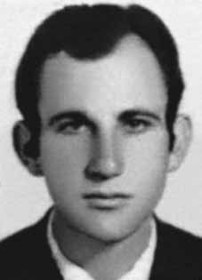

José
Idésio
Brianezi
CIRCUNSTÂNCIAS DA MORTE
José Idesio morreu no dia 13 de abril de 1970, em São Paulo (SP), por agentes da Operação Bandeirante (OBAN), do II Exército. A versão apresentada à época pelos órgãos da repressão é de que teria morrido em um tiroteio com agentes da OBAN. A certidão de óbito atesta que ele faleceu na pensão onde morava, à rua Itatins, n o 88, no bairro de Campo Belo, São Paulo (SP), no dia 13 de abril de 1970, em decorrência de “hemorragia interna traumática”. Considerando que parte da documentação do Instituto Médico Legal (IML) não pôde ser encontrada no arquivo do Departamento de Ordem Política e Social de São Paulo (DOPS), não se pode averiguar o horário de entrada do corpo na instituição. Em foto do corpo localizada neste mesmo arquivo, pela CEMDP, pode-se verificar que José Idesio apresentava o dorso nu e a barba por fazer, o que não era comum, pois discordava das regras de segurança para a militância clandestina. Essa foto constituiu-se em importante prova, por contradizer as informações contidas na única página do laudo do IML que foi descoberta, que se referia às vestimentas de José Idesio como “camisa de seda fantasia, calça de brim zuarte, calção”. Em depoimento, Carlos Eugênio Sarmento Coelho da Paz, à época militante da ALN, refutou a versão de que o militante teria morrido em tiroteio, revelando evidências sobre a possível prisão e tortura de José Idesio: […] José era um bom militante e seguia à risca as regras de segurança exigidas pela clandestinidade. Lembro-me dele sempre arrumado, de terno e com barba feita todos os dias. […] José foi declarado morto em tiroteio na pensão onde morava às 21:00 h do dia 13/4/1970. Voltava, portanto, de um dia de trabalho. A barba que ostentava na foto não é aquela de uma pessoa que necessita manter um disfarce a qualquer custo, aparenta muito mais que 24 horas, o que induz a pensar que ele esteve sob custódia, vivo […]. Seu rosto estava mais magro, denotando sofrimento anterior à morte. Em seu relato, Guiomar Silva Lopes, militante da ALN que conviveu com José Idesio entre os anos de 1969 e 1970, momento em que também foi detida, ratifica o depoimento anterior. Do convívio estabelecido, afirmou que ele: […] era um rapaz jovem, alto, forte, com cabelos castanhos, pele muito clara que lhe dava um aspecto de um europeu. Tinha o visual de um jovem de classe média, vestia-se com discrição, sem nunca ter notado descuidos com o penteado, com a barba ou com a roupa […]. A foto que me foi apresentada me deixou surpresa, pois não parecia a mesma pessoa por causa do aspecto e das transformações em seu rosto. As buscas por parte da CEMDP consistiram em solicitar a análise do laudo necroscópico e da única foto do corpo ao perito criminal Celso Nenevê, que se viu impossibilitado de reconstituir os fatos, tendo em vista omissões, imprecisões do laudo, falta de fotografias da necropsia e perícia de local. No entanto, o perito pôde afirmar que pelos menos dois disparos foram efetuados de maneiras diferentes do que fora descrito no laudo necroscópico, revelando vestígios para inferir que a morte de José Idesio foi em decorrência de “execução sumária”. José Idesio foi enterrado como indigente, no Cemitério de Vila Formosa. A exumação dos seus restos mortais foi descartada pelo perito, tendo em vista que seus pais, na identificação e translado para o Cemitério Municipal de Apucarana, levantaram dúvidas se o corpo entregue pertencia realmente ao filho. A Comissão Estadual da Verdade do Estado de São Paulo realizou a 118a audiência pública, mencionado o caso de José Idesio, no dia 20 de março de 2014.
José Idesio died on April 13, 1970, in São Paulo (SP), by agents of Operation Bandeirante (OBAN), of the II Army. The version presented at the time by the repression bodies was that he had died in a shootout with OBAN agents. The death certificate certifies that he died in the pension where he lived, at Rua Itatins, no. 88, in the Campo Belo neighborhood, São Paulo (SP), on April 13, 1970, as a result of “traumatic internal bleeding”. Considering that part of the documentation from the Legal Medical Institute (IML) could not be found in the archive of the Department of Political and Social Order of São Paulo (DOPS), it is not possible to ascertain the time of the body's entry into the institution. In a photo of the body located in this same archive, by CEMDP, it can be seen that José Idesio had a bare back and was unshaven, which was unusual, as he disagreed with the security rules for clandestine activism. This photo constituted important evidence, as it contradicted the information contained in the only page of the IML report that was discovered, which referred to José Idesio's clothing as “fantasy silk shirt, zuarte jeans, shorts”. In testimony, Carlos Eugênio Sarmento Coelho da Paz, at the time an ALN militant, refuted the version that the militant had died in a shootout, revealing evidence about the possible arrest and torture of José Idesio: […] José was a good militant and strictly followed the security rules required by clandestinity. I remember him always tidy, in a suit and clean-shaven every day. […] José was declared dead in a shooting at the guesthouse where he lived at 9:00 pm on 4/13/1970. So he was returning from a day of work. The beard he sported in the photo is not that of a person who needs to maintain a disguise at any cost, it appears much longer than 24 hours, which leads us to think that he was in custody, alive […]. His face was thinner, showing suffering before death. In his report, Guiomar Silva Lopes, an ALN activist who lived with José Idesio between 1969 and 1970, when she was also detained, confirms the previous statement. From the established environment, he stated that he: [...] was a young boy, tall, strong, with brown hair, very light skin that gave him a European appearance. He had the look of a middle-class young man, he dressed discreetly, without ever noticing any carelessness with his hairstyle, beard or clothes […]. The photo that was presented to me surprised me, as it didn't look like the same person because of the appearance and the transformations in his face. The searches by CEMDP consisted of requesting the analysis of the autopsy report and the only photo of the body from criminal expert Celso Nenevê, who found himself unable to reconstruct the facts, given omissions, inaccuracies in the report, lack of photographs from the autopsy and location inspection. However, the expert was able to state that at least two shots were fired in different ways than described in the autopsy report, revealing traces to infer that José Idesio's death was the result of a “summary execution”. José Idesio was buried as a pauper, in the Vila Formosa Cemetery. The exhumation of his remains was ruled out by the expert, considering that his parents, when identifying and transferring him to the Apucarana Municipal Cemetery, raised doubts as to whether the body delivered really belonged to their son. The State Truth Commission of the State of São Paulo held the 118th public hearing, mentioning the case of José Idesio, on March 20, 2014.
José Idesio murió el 13 de abril de 1970, en São Paulo (SP), por agentes de la Operación Bandeirante (OBAN), del II Ejército. La versión presentada en su momento por los órganos de represión fue que había muerto en un tiroteo con agentes del OBAN. El certificado de defunción certifica que falleció en la pensión donde vivía, en la Rua Itatins, núm. 88, en el barrio de Campo Belo, São Paulo (SP), el 13 de abril de 1970, como consecuencia de una “hemorragia interna traumática”. Considerando que parte de la documentación del Instituto Médico Legal (IML) no pudo encontrarse en el archivo del Departamento de Orden Político y Social de São Paulo (DOPS), no es posible precisar el momento del ingreso del cuerpo a la institución. En una fotografía del cuerpo ubicada en este mismo archivo, por el CEMDP, se puede observar que José Idesio tenía la espalda desnuda y no estaba afeitado, lo cual era inusual, ya que no estaba de acuerdo con las normas de seguridad para el activismo clandestino. Esta foto constituyó una prueba importante, pues contradecía la información contenida en la única página del informe del IML descubierta, que se refería a la vestimenta de José Idesio como “camisa de seda fantasía, jeans zuarte, shorts”. En testimonio, Carlos Eugênio Sarmento Coelho da Paz, entonces militante de la ALN, refutó la versión de que el militante había muerto en un tiroteo, revelando evidencias sobre la posible detención y tortura de José Idesio: […] José era un buen militante y seguía estrictamente las reglas de seguridad que exigía la clandestinidad. Lo recuerdo siempre ordenado, de traje y bien afeitado todos los días. […] José fue declarado muerto en un tiroteo en la casa de huéspedes donde vivía a las 21:00 horas del 13/04/1970. Entonces regresaba de un día de trabajo. La barba que lucía en la foto no es la de una persona que necesita mantener un disfraz a toda costa, parece mucho más larga de 24 horas, lo que nos lleva a pensar que estaba detenido, vivo […]. Su rostro estaba más delgado, mostrando el sufrimiento antes de la muerte. En su informe, Guiomar Silva Lopes, militante de la ALN que vivió con José Idesio entre 1969 y 1970, cuando ella también fue detenida, confirma la afirmación anterior. Del ambiente establecido manifestó que él: [...] era un muchacho joven, alto, fuerte, de cabello castaño, piel muy clara que le daba un aspecto europeo. Tenía aspecto de joven de clase media, vestía discretamente, sin notar nunca ningún descuido en el peinado, la barba o la ropa […]. La foto que me presentaron me sorprendió, ya que no parecía la misma persona por la apariencia y las transformaciones en su rostro. Las búsquedas del CEMDP consistieron en solicitar el análisis del informe de la autopsia y la única foto del cuerpo al perito criminalista Celso Nenevê, quien se encontró incapaz de reconstruir los hechos, dadas omisiones, inexactitudes en el informe, falta de fotografías de la autopsia y de inspección del lugar. Sin embargo, el perito pudo afirmar que al menos dos disparos fueron realizados en forma distinta a la descrita en el informe de la autopsia, revelando indicios para inferir que la muerte de José Idesio fue resultado de una “ejecución sumaria”. José Idesio fue enterrado como indigente, en el Cementerio de Vila Formosa. La exhumación de sus restos fue descartada por el perito al considerar que sus padres, al identificarlo y trasladarlo al Cementerio Municipal de Apucarana, plantearon dudas sobre si el cuerpo entregado realmente pertenecía a su hijo. La Comisión Estatal de la Verdad del Estado de São Paulo realizó la 118ª audiencia pública, mencionando el caso de José Idesio, el 20 de marzo de 2014.